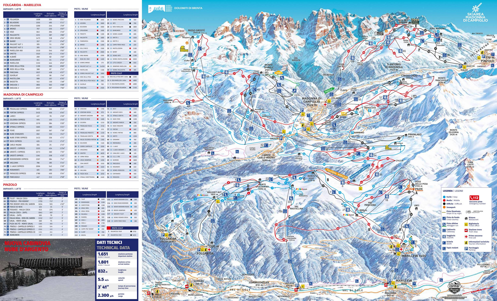

🏨 המלון
Hotel FortiniVia Cima Tosa 25, Campo Carlo Magno
ציון Booking: 8.7 (972 ביקורות) · מיקום 9.1
דף המלון ב-Booking
🧾 ההזמנה
חדר לארבעה + חדר זוגי/טווין · ארוחת בוקר כלולהסה״כ €3,784.14 (כולל ~€50 מס עיר שמשולם במלון)
ביטול חינם עד ~2.2.2027
🚡 מעליות קרובות (לפי Booking)
| Fortini Express | 40 מ׳ |
| Grostè 1 Express (גונדולה) | 250 מ׳ |
| Pradalago Express | 1.4 ק״מ |
👨👩👧👦 המשפחה
אילון ושרון, יהלי (21), מאיה (18), עמרי (15), בר (11)כולם ברמה בינונית (כחול/אדום)
🏂 בר רוצה ללמוד סנובורד
🗺️ מפה
⚠️ המיקומים על המפה משוערים (לפי מיקום כללי, לא כתובות מדויקות), למעט האזור הכללי של המלון. מפה: © OpenStreetMap.
חלוקה לפי צבע
3 אזורים, סקיפס אחד
Madonna di Campiglio מחוברת בסקי ל-Pinzolo (ואל רנדנה) ול-Folgarida-Marilleva (ואל די סולה). הסקיפס של Skiarea כולל גם את Pejo (לא מחובר בסקי).חסרונות לפי skiresort.info: חלק מהחניות בתשלום, אין מסלולי עמק ל-Pinzolo, Daolasa ו-Marilleva 900.
🗺️ מפת המסלולים

⛷️ מסלולים מומלצים למשפחה (כחול/אדום)
הנתונים (אורך/הפרש גובה) מתוך רשימת המסלולים הרשמית ב-ski.it. הבחירה היא המלצה שלי לפי צבע ומיקום; כדאי לאמת על המפה.
| מסלול | צבע | אורך | הפרש | הערה |
|---|---|---|---|---|
| Malga Zeledria – Fortini | כחול | 1,360 מ׳ | 147 מ׳ | מסתיים ליד המלון – חימום מושלם |
| Pradalago easy | כחול | 3,740 מ׳ | 460 מ׳ | ארוך ונוף לברנטה (skiresort ממליץ) |
| Zeledria | כחול | 1,310 מ׳ | 165 מ׳ | אזור Campo Carlo Magno |
| Skiweg Campiglio | כחול | 2,200 מ׳ | 240 מ׳ | חיבור לכפר |
| Belvedere | כחול | 1,160 מ׳ | 195 מ׳ | |
| Nube d'argento | כחול | 1,280 מ׳ | 200 מ׳ | |
| Genziana | אדום | 1,780 מ׳ | 360 מ׳ | |
| Fiocco di neve | אדום | 1,480 מ׳ | 230 מ׳ | |
| Rododendro (Pinzolo) | אדום | 3,100 מ׳ | 600 מ׳ | יום טיול לפינצולו |
🖤 לא למשפחה ברמה בינונית: 3-Tre / Canalone Miramonti (מסלול גביע העולם), Spinale direttissima (שחור, 2,400 מ׳), Amazzonia (שחור).
🎟️ מחירי סקיפס 2026/27 (Skiarea, מחירון רשמי)
| תעריף | מבוגר | ג׳וניור | ילד |
|---|---|---|---|
| יום 1 · נמוכה | €75 | €53 | €38 |
| יום 1 · גבוהה | €87 | €61 | €44 |
| 5 ימים · נמוכה | €331 | €232 | €166 |
| 5 ימים · גבוהה | €383 | €268 | €192 |
גבולות הגיל לג׳וניור/ילד והנחות משפחתיות: לא אימתתי – מופיעים במחירון. המחיר הזול ביותר לרוב באונליין.
🏂 סנופארק בשביל בר
שני בתי הספר שאימתתי הם בקרבת המלון/הגרוסטה. יש בעיירה עוד בתי ספר – רשימה מלאה באתר התיירות.
🏫 Scuola Italiana Sci Campo Carlo Magno (CCM)
• כ-60 מדריכים, קורסים קבוצתיים ופרטיים לכל הרמות.
• סנובורד מתחילים לילדים: 11:00–12:50, עד 6 תלמידים, מינימום 3 ימים, מתחיל בראשון או שני – מתאים בדיוק להגעה ב-7.2!
• קבוצות סנובורד לגילאי 8+ · מציעים גם השכרה (CCM Rent).
• מחיר: לא מצאתי מחיר מפורסם – לשאול.
🦓 Scuola di Snowboard Zebra
• מפגש: Rifugio Boch בתחנת האמצע של הגרוסטה; מתחילים לומדים בשטח מסודר שם ואז מסלולים כחולים.
• מחיר: €170–€270 לאדם (לפי checkyeti, עונת 2026/27).
• השכרה ב-Zebra Shop. צריך סקיפס מהיום הראשון.
💡 המלצה לבר
מקורות: Scatti di Gusto (2023, עודכן 2024) · graffer.com · Stoppani · campigliodolomiti.it. מחירים מ-2023 – כנראה עלו.
מיקום 9.1
על Fortini (Booking)
"Fantastic location ski in ski out, staff very helpful… Easy access to lifts"
"The position of the Hotel is perfect, ski to door Hotel. Second year at this Hotel"
"Great location next to the ski lift. Modern and comfortable rooms"
"Great location next to the telecabine, amazing breakfast"
"A bit noisy in the evening if your room is above the bar"
"right by a ski lift and main road"
על אזור הסקי
השוואת מקורות – פברואר, אזור העיירה (~1,520 מ׳)
weatherapi · weather-atlas · easeweather · weather-and-climate (נתונים מטרנטו!)
✈️ טיסה ונסיעה
ורונה – הכי נוח, כ-2.5 שעות: A22 צפונה לכיוון טרנטו, ומשם דרך ואל רנדנה/פינצולו למדונה די קמפיליו ועד Campo Carlo Magno (כ-2 ק״מ מעל העיירה).חלופות: ברגמו (~2.5–3 ש׳), מילאנו/ונציה (~3–3.5 ש׳), אינסברוק (~3 ש׳ דרך הברנר).
זמנים משוערים. בחורף – חובה צמיגי חורף/שרשראות ברכב; לבדוק עם חברת ההשכרה.
מסלול בגוגל מפות🅿️ במלון
• חניה €10 ליום• אחסון סקי במקום
• השכרת ציוד ובית ספר לסקי בסמוך
• ~2 ק״מ למרכז (2 דק׳ ברכב / 10–20 דק׳ הליכה), יש שאטל